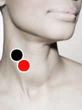

Estreptococo Pneumoniae
Pares
carótida (D) - yugular (D)
dorsal 12 - dorsal 12

Nota: pudiera corresponder a carótida interna - carótida externa.
Generalidades:
Es una bacteria causante de múltiples trastornos en vías respiratorias como neumonías, sinusitis o bien localizarse en otros puntos como en el abdómen causando peritonitis. En personas inmunodeprimidas puede complicarse presentando cuadros severos de meningitis o sepsis.
Streptococcus pneumoniae es una bacteria gram positiva de la familia de los neumococos, se agrupa en diplococos y pocas veces forma cadenas. Usualmente se encuentra en la nasofaringe, infecta casi exclusivamente a los humanos. El hecho de que puedan aparecer los síntomas o incluso complicaciones se debe principalmente a la variedad de cepas y a la condición del sistema inmune de la persona.
Transmisión
Por pequeñas gotas de saliva; contacto directo o cercanía con el enfermo.